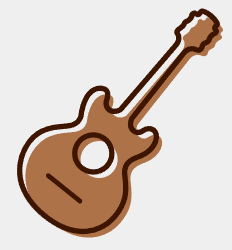

Strings
 Stringed Instruments sound when the strings are plucked, strummed, hit, or rubbed.
Many stringed instruments have a body that helps resonance and increases audibility.
Unlike the woodwind instruments, string instruments can be grouped by construction or how they’re played. We’ll focus on construction of the instrument.
Categorizing String Instruments- Based on Construction
Stringed instruments can be grouped into three major categories when considering construction.
Lutes - Instruments that support strings by with a neck and body. Popular examples are a guitar and violin.
Harps - Instruments that contain the strings in a frame.
Zithers - Instruments that mount the strings on a body, frame or tube. Picture a Harpsichord or Cimbalom. (The piano would be categorized here as well.)